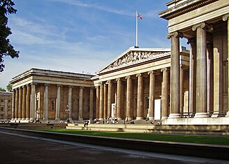
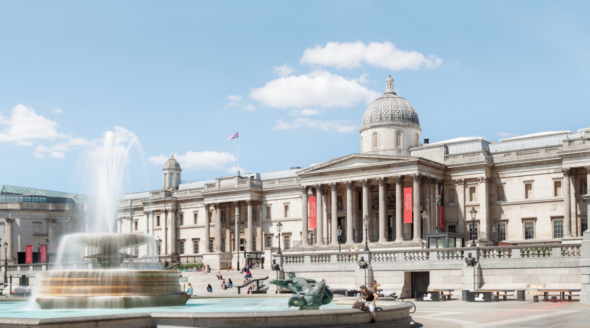
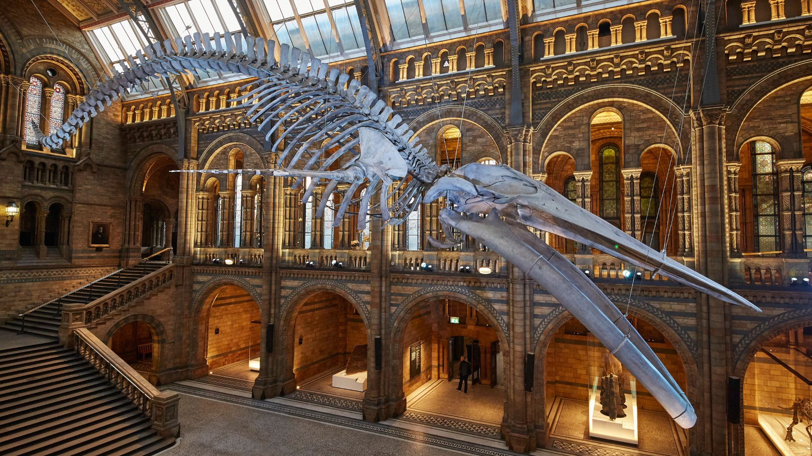
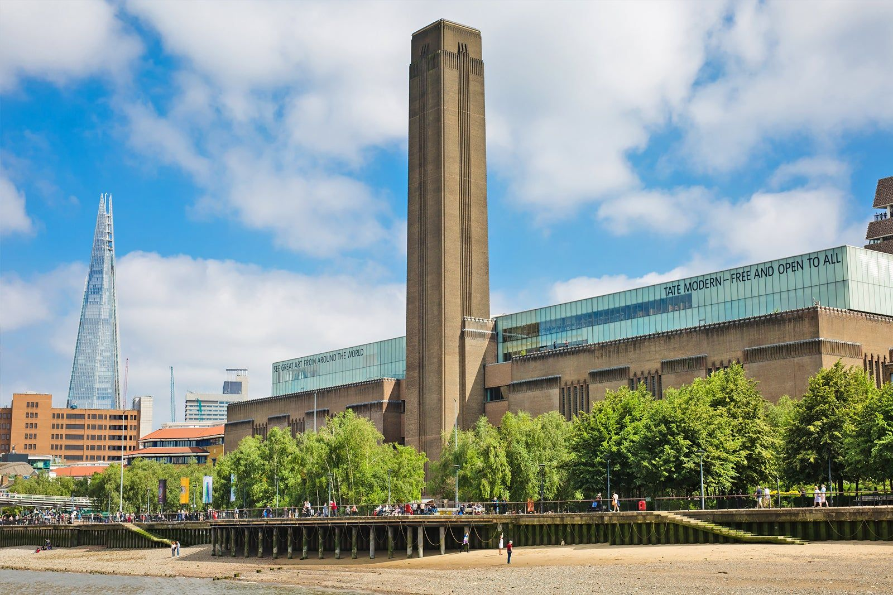

British Museum:
El Museo Británico fue fundado en 1753 y abrió sus puertas en 1759. Fue el primer museo nacional que abarcó todos los campos del conocimiento humano, abierto a visitantes de todo el mundo. Este, está impulsado por una curiosidad insaciable por el mundo, una profunda creencia en los objetos como testigos fiables y documentos de la historia humana, una investigación sólida, así como el deseo de ampliar y compartir el conocimiento.
Nathional Gallery:
El Nathional Gallery cuenta con más de 2.600 obras, entre las que se incluyen muchas pinturas famosas, como el Retrato de Arnolfini de van Eyck, La Venus del espejo de Velázquez, El Temerario luchando de Turner y Los girasoles de Van Gogh. En él, se presentan todas las grandes tradiciones de la pintura de Europa occidental, desde los artistas de la Italia medieval tardía y del Renacimiento hasta los impresionistas franceses.
Natural History Museum:
El Museo de Historia Natural es una atracción turística de primer nivel y un centro líder en investigación científica. Utilizan sus colecciones únicas y sus experiencia inigualable para abordar los mayores desafíos que enfrenta el mundo hoy. También tienen en su posesión más de 80 millones de objetos que abarcan miles de millones de años y reciben a más de cinco millones de visitantes anualmente.
Tate Modern:
Cuando la Tate abrió sus puertas al público en 1897, contaba con una sola sede, que exhibía una pequeña colección de obras de arte británicas. Hoy en día, cuenta con cuatro sedes principales y la colección nacional de arte británico desde 1500 hasta la actualidad, así como de arte moderno y contemporáneo internacional, que incluye casi 70.000 obras.